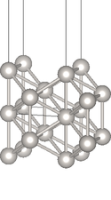

|
JDFTx
1.4.0
|


|
|
JDFTx
1.4.0
|
|

|

| 
|
| Pt(100) | Pt(110) | Pt(111) |
Constructing a slab-geometry calculation (specifically graphene) from graphite in the Two-dimensional materials tutorial was easy: graphite already consisted of distinct layers. This tutorial shows you how to manually set up single-crystal platinum surfaces of various orientations, starting from supercell transformations, and then shows examples of surface property calculations in vacuum and solution.
Let's start with the geometry of bulk platinum, written using explicit lattice vectors rather than the shorthand lattice name:
set aBy2 3.705 #a/2 in bohrs
lattice \
0 ${aBy2} ${aBy2} \
${aBy2} 0 ${aBy2} \
${aBy2} ${aBy2} 0
ion Pt 0. 0. 0. 1
Note that the lattice vectors are in columns of the 3x3 matrix , and we have used variable substitution along with the set command (see Input file documentation) to declare the lattice constant in one place.
We can construct a surface unit cell in three steps. First we transform the unit cell (construct a supercell) in a way that allows us to identify layers with the desired surface direction, so that we can cleave the material. Then we repeat this supercell along the surface normal direction till there is enough room for the desired number of atomic layers and the vacuum gap. Finally, we keep atoms from a desired number of layers and drop the rest to create a slab with two surfaces, separated by a vacuum gap along the third direction (which we will make non-periodic using slab-mode Coulomb truncation).
The setup for the three common low-index surfaces of platinum, (100), (110) and (111), are discussed in the following pages in detail:
After following through these pages you will have x.lattice and x.ionpos files for each x in 100, 110 and 111.
Now that we have the geometry - lattice and fractional coordinates - of the surfaces, setting up the calculations is rather straightforward. We will run vacuum and solvated calculations for each surface, and our input files will closely resemble those in the Solvation of molecules tutorial; the differences for the slab geometry will be familiar from the Two-dimensional materials tutorial.
First we combine most of the setup in a common input file:
#Save the following to common.in: ion-species GBRV/$ID_pbesol.uspp elec-ex-corr gga-PBEsol elec-cutoff 20 100 coulomb-interaction Slab 001 coulomb-truncation-embed 0 0 0 kpoint-folding 12 12 1 elec-smearing Fermi 0.01 electronic-SCF #ionic-minimize nIterations 10 #Uncomment to enable geometry optimization
We will run a vacuum calculation starting from the geometry we set up:
#Save the following to Vacuum.in:
include common.in
include ${surface}.lattice
include ${surface}.ionpos
dump-name ${surface}-Vacuum.$VAR
dump End State IonicPositions
These surface calculations are expensive, and to speed them up, I have disabled geometry optimization in Common.in. (So by default, all the results will be at the geometry we set up initially.) You can optionally enable geometry optimization and rerun the calculations to see how much difference it makes.
We will then run a solvated calculation starting from the final vacuum geometry (same as initial, unless you enabled geometry optimization) and wavefunctions:
#Save the following to Solvated.in:
include common.in
include ${surface}.lattice
include ${surface}-Vacuum.ionpos
initial-state ${surface}-Vacuum.$VAR
dump End None
fluid LinearPCM
pcm-variant CANDLE
fluid-solvent H2O
fluid-cation Na+ 1.
fluid-anion F- 1.
As before, this sets up solvation in a 1M aqueous NaF electrolyte.
We can run all the necessary calculations using the script:
#!/bin/bash
for surface in 100 110 111; do
export surface
jdftx -i Vacuum.in | tee ${surface}-Vacuum.out
jdftx -i Solvated.in | tee ${surface}-Solvated.out
done
Save the above to run.sh, give execute permissions using "chmod +x run.sh", and execute using "./run.sh". This will take a while (~ half hour on a laptop)!
Finally, let's analyze the total energies and electron chemical potentials (mu) of these calculations. We can calculate the formation energy of the surfaces (in vacuum and solution), by comparing against the energy of the bulk metal from the Metals tutorial (scaled to the same number of atoms i.e. 5). The mu in vacuum is the work function, whereas the mu in solution is related to the electrode potential at which the surface is neutral, which is called the potential of zero charge (PZC) of the surface.
We can convert the absolute mu to an electrode potential relative to a reference such as the standard hydogen electrode (SHE) by knowing the absolute potential of the reference electrode:
V_SHE = - (mu - mu_SHE)
There is an overall negative sign due to differences in sign convention for electrode (reduction) potentials and electron chemical potentials. Experimentally, mu_SHE is calibrated to -4.44 eV. Alternately, we can calibrate mu_SHE by comparig theoretical calculations of the PZC of various metal surfaces against experimental measurements. We will use this approach, as it tends to cancel systematic errors in the solvation model. For the CANDLE solvation model, mu_SHE = -4.66 eV (from the CANDLE paper).
We can extract all these results from the output files and print them nicely using the script:
#!/bin/bash
Ebulk="-89.035087" #Bulk metal energy per atom
function parseOutputs()
{
logFile="$1"
awk "
/R =/ {RstartLine=NR}
NR==RstartLine+3 { Lz = \$4 } #Height of unit cell
/unit cell volume/ { A = \$NF*2/Lz} #Surface area (top+bottom)
/FillingsUpdate:/ { mu = \$3 } #Electron chemical potential
/IonicMinimize: Iter/ { Esurf = (\$5 - $Ebulk*5)/A } #Surface energy
END {
eV = 1/27.2114;
nm = 1/0.05291772;
print Esurf/(eV/(nm*nm)), mu/eV #Output with unit conversion
}
" $logFile
}
#Print header:
echo "Surface Esurf [eV/nm^2] Absolute mu [eV] V_SHE"
echo " Vacuum Solvated Shift Vacuum Solvated Shift [V]"
#Print results:
for surface in 100 110 111; do
EmuVac="$(parseOutputs $surface-Vacuum.out)"
EmuSol="$(parseOutputs $surface-Solvated.out)"
echo -n " $surface "
#Print extracted results and solvation differences:
echo "$EmuVac $EmuSol" | awk '{
printf("%7.2f %7.2f %7.2f %7.2f %7.2f %7.2f %7.2f\n",
$1, $3, $3-$1, $2, $4, $4-$2, -($4-(-4.68))) }'
done
Save the above to collectResults.sh, give execute permissions using "chmod +x collectResults.sh", and execute using "./collectResults.sh" to get the results:
| Surface | Esurf [eV/nm2] | Absolute mu [eV] | VSHE [V] | ||||
|---|---|---|---|---|---|---|---|
| Vacuum | Solvated | Shift | Vacuum | Solvated | Shift | ||
| (100) | 8.77 | 8.51 | -0.26 | -5.72 | -5.46 | 0.26 | 0.78 |
| (110) | 11.18 | 10.96 | -0.22 | -5.38 | -5.11 | 0.28 | 0.43 |
| (111) | 5.22 | 4.94 | -0.28 | -5.74 | -5.48 | 0.26 | 0.80 |
Note that the surface formation energies in vacuum follow the trend (111) < (100) < (110), indicating that (111) is most stable and (110) is least stable. This remains the case even in solvent: solvation reduces the formation energies of all three surfaces (stabilizes the surfaces), but only by a relatively small amount.
The chemical potentials (negative of work function in vacuum / PZC in solution) also show a similar trend (111) <= (100) < (110). Solvation shifts up the chemical potentials towards zero consistently by about 0.3 eV for all three surfaces.
Exercise: what happens with geometry optimization? How much do these results change? If you have issues with electronic-SCF convergence, try the stabler but slower electronic-minimize instead.